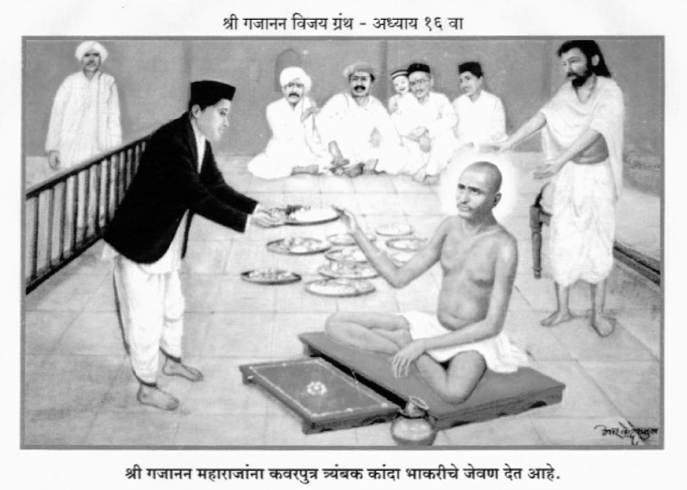

॥ अध्याय १६॥

॥ श्रीगणेशाय नमः ॥
जयजयाजी परशुधरा ।
हे जमदग्नीच्या कुमारा ।
परशुरामा परमेश्वरा ।
आतां उपेक्षा करूं नको ॥१॥
तूं सहस्त्रार्जुनातें दंडून ।
केलें द्विजांचें संरक्षण ।
ब्राह्मणांचा अपमान ।
सहन झाला नाहीं तुला ॥२॥
आतां मात्र डोळे मिटिसी ।
कां रे देवा ब्राह्मणांविशीं ? ।
काय आहे लागली तुसी ।
गाढ निद्रा येधवां ॥३॥
म्हणून डोळे मिटूं नका ।
स्वस्थ ऐसें बसूं नका ।
आणीबाणीचा प्रसंग देखा ।
आहे हरी सांप्रत ॥४॥
तुझ्या वशिल्यावांचून ।
अवघीं कृत्यें आहेत शीण ।
आर्यसंस्कृतीचें रक्षण ।
होणें नाहीं तुझ्याविण ॥५॥
गजाननमाया अघटित ।
कोण जाणें तिजप्रत ।
महाराजांचा एक भक्त ।
पुंडलिक नामें मूंडगांवीं ॥६॥
हा शेगांवची करी वारी ।
समर्थाविषयीं प्रेम भारी ।
हमेश त्यांचें चिंतन करी ।
एकाग्रशा मनानें ॥७॥
त्याच गांवीं भागाबाई ।
एक ठाकरीण होती पाही ।
निष्ठा तिची एक्याही ।
ठिकाणासीं बसत नसे ॥८॥
ती दांभिक होती फार ।
सदा दंभाचा बाजार ।
भरवून भोंदी नारीनर ।
हाच धंदा तियेचा ॥९॥
ती बोलली पुंडलिकाला ।
तुझा जन्म वाया गेला ।
कां कीं तूं नाहीं केला ।
सद्गुरु तो आपणांतें ॥१०॥
गजाननाच्या वार्या करिसीं ।
सद्गुरु त्याला मानिसी ।
परी त्यानें सांग तुसी ।
मंत्र कानीं कथिला कां ? ॥११॥
अरे विधीवांचून ।
गुरु न होत कधीं जाण ।
शेगांवचा गजानन ।
वेडापिसा साच असे ॥१२॥
तुझा ताप बरा झाला ।
म्हणून तूं मानिसी त्याला ।
या काकतालीयन्यायाला ।
बळी पुंडलिका पडूं नको ॥१३॥
' गिन गिन गणातें ' हें भजन ।
पिशापरी आचरण ।
कोणाचेंही खाई जाण ।
ऐसा मुळीं भ्रष्ट तो ॥१४॥
म्हणून तुला सांगतें ।
चाल अंजनगांवातें ।
केजाजीच्या शिष्यातें ।
आपण दोघे गुरु करूं ॥१५॥
उद्यां त्यांचें कीर्तन ।
अंजनगांवीं असे जाण ।
तें ऐकावया कारण ।
उठून जाऊं प्रातःकाळीं ॥१६॥
गुरु असावा महाज्ञानी ।
चातुर्य-शास्त्र-चिंतामणी ।
गुरु असावा परमगुणी ।
भक्तिपथातें दावितां ॥१७॥
यांतील लक्षण एकही ।
गजाननाच्या नसे ठायीं ।
म्हणून वेळ न करी कांहीं ।
चाल अंजनगांवांतें ॥१८॥
तो भोकरे पुंडलिक ।
होता मनाचा भाविक ।
भागीच्या भाषणें देख ।
चित्त त्याचें घोटाळलें ॥१९॥
त्यानें ऐसा विचार केला ।
उदईक अंजनगांवाला ।
जाऊं कीर्तन ऐकण्याला ।
पुढचा विचार पुढें करूं ॥२०॥
ऐसा विचार करून ।
भागीसी बोलला जाण ।
अंजनगांवालागून ।
चाल येतों तुझ्यासवें ॥२१॥
दोघांचा विचार झाला ।
पुंडलिक रात्रीं स्वस्थ निजला ।
तों तीन प्रहर रात्रीला ।
काय घडलें तें ऐका ॥२२॥
पुंडलिकाच्या समोर ।
एक पुरुष दिगंबर ।
उभा राहिला साचार ।
थेट समर्थांच्या परी ॥२३॥
पुरुष म्हणे रे पुंडलिका ।
अंजनगांवासी जातोस कां ? ।
गुरु करायातें निका ।
त्या भागीच्या सल्ल्यानें ॥२४॥
जातोस तरी जावें त्वरित ।
त्याचें नांव काशीनाथ ।
तेथें जातां फिटेल भ्रांत ।
तुझी वेड्या निश्चयें ॥२५॥
कानांत कांहीं बोलला ।
म्हणून कां तो गुरु झाला ।
लोक कानगोष्टीला ।
किती तरी करतात ॥२६॥
मग ते एकमेकांचे ।
काय गुरु होती साचे ।
नादीं दंभाचाराचे ।
त्वां पुंडलिका पडूं नये ॥२७॥
तूं इकडे करी कान ।
मंत्र देतों तुजकारण ।
' गण गण ' ऐसें बोलून ।
महाराज स्तब्ध जहाले ॥२८॥
आणखी काय आहे आस ।
ती मी आज पुरवीन खास ।
ऐसे ऐकतां पुंडलिकास ।
आनंद अति जाहला ॥२९॥
पाहूं लागला निरखून ।
स्वप्नीं त्या पुरुषालागून ।
तों पाहिलें गजानन ।
शेगांवचे स्वामी पहा ॥३०॥
पुंडलिक म्हणे गुरुराया ।
पादुका द्या ह्या मला सदया ।
नित्य पूजा करावया ।
यावीण आणखी आस नसे ॥३१॥
बरें उद्या दोन प्रहर ।
दिवस येतां साचार ।
पादुकांची पूजा कर ।
ह्या मी दिधल्या घेई तुला ॥३२॥
पादुका त्या घ्यावयाला ।
स्वप्नीं पुंडलिक उठून बसला ।
तोंच आली तयाला ।
साक्षात् जागृति श्रोते हो ॥३३॥
जागा होऊनी सभोंवार ।
पाहूं लागला साचार ।
तो कोणीच दिसेना अखेर ।
नाहीं पत्ता पादुकांचा ॥३४॥
उलगडा कांहीं होईना ।
संशय मनींचा जाईना ।
म्हणे स्वामींच्या भाषणा ।
बाट न लागला आजवरी ॥३५॥
स्वप्नीं येऊन दर्शन ।
त्यांनीं दिलें मजकारण ।
कशी भागी ठाकरीण ।
तेंही स्वप्नीं कथन केलें ॥३६॥
तैसेंच उद्यां दोन प्रहरीं ।
पादुकांची पूजा करी ।
ऐसें बोलले साक्षात्कारी ।
त्याचा समजूं काय अर्थ ? ॥३७॥
किंवा नव्या पादुका करून ।
म्यां करावें पूजन ।
ऐसें त्यांचें आहे मन ।
हें कांहीं कळेना ॥३८॥
मी पदींच्या मागितल्या ।
पादुका त्या होत्या भल्या ।
त्याच त्यांनीं मसी दिल्या ।
मग नव्या घेऊं कशास ? ॥३९॥
ऐसें नाना तर्क करी ।
पुंडलिक आपल्या अंतरीं ।
तों इतक्यांत आली घरीं ।
भागी ठाकरीण बोलावण्या ॥४०॥
अंजनगांवीं चाल आतां ।
मोक्ष गुरू करण्याकरितां ।
दिसूं लागला आहे आतां रस्ता ।
अरुणोदयाचे प्रकाशें ॥४१॥
पुंडलिक म्हणे भागाबाई ।
मी कांहीं येत नाहीं ।
मर्जी असल्यास तूंच जाई ।
अंजनगांवाकारणें ॥४२॥
मीं जो एकदां गुरु केला ।
श्रीगजानन महाराजाला ।
तो न आतां सोडी भला ।
हाच माझा निश्चय ॥४३॥
तें ऐकतां भागाबाई ।
अंजनगांवास गेली पाही ।
आतां मुंडगांवाचें ठाईं ।
काय झालें तें ऐका ॥४४॥
झ्यामसिंग रजपूत ।
गेला होता शेगांवांत ।
दर्शन स्वामींचें घेण्याप्रत ।
दोन दिवस याच्या आधीं ॥४५॥
तो जेव्हां मूंडगावाला ।
येण्या परत निघाला ।
तईं बाळाभाऊला ।
ऐसें बोलले महाराज ॥४६॥
या पादुका पुंडलिकासी ।
द्याया देई याच्यापासी ।
समर्थ आज्ञा होतां ऐसी ।
तैसेंच केलें बाळानें ॥४७॥
करीं घेऊन पादुका ।
झ्यामसिंगास बोलला देखा ।
भोकरे जो का पुंडलिका ।
तुमच्या गांवींचा असे हो ॥४८॥
त्यास ह्या द्या नेऊन ।
करायासी पूजन ।
तें झ्यामसिंगें ऐकून ।
पादुका घेतां जहाला ॥४९॥
झ्यामसिंग आला मुंडगांवांत ।
तों पुंडलिक भेटला वेशींत ।
पुसूं लागला त्याप्रत ।
कुशलवृत्त समर्थांचें ॥५०॥
प्रसाद मला द्यावयासी ।
कांहीं दिला का तुम्हांपासी ? ।
हें ऐकतां झ्यामसिंगासी ।
महदाश्चर्य वाटलें ॥५१॥
सवें घेऊन पुंडलिकाला ।
झ्यामसिंग घेऊन घरीं गेला ।
खोदून विचारूं लागला ।
तूं ऐसें कां विचारिलें ? ॥५२॥
पुंडलिकानें स्वप्नाची ।
गोष्ट त्याला कथिली साची ।
ती ऐकतां झ्यामसिंगाची ।
भ्रांति नष्ट झाली हो ॥५३॥
लगेच पादुका काढिल्या ।
पुंडलिकाच्या हातीं दिल्या ।
त्याच अजून आहेत भल्या ।
मुंडगांवांत त्याच्या घरीं ॥५४॥
दोन प्रहरीं पूजन ।
पुंडलिकानें केलें जाण ।
मनोभावें करून ।
त्या प्रसादी पादुकांचें ॥५५॥
पहा श्रोते खरें संत ।
सांभाळिती आपुलें भक्त ।
आडमार्गानें किंचित् ।
जाऊं न देती तयांला ॥५६॥
निज भक्ताचे मनोरथ ।
समर्थ कैसे पुरवितात ।
तें येईल ध्यानांत ।
या कथेतें ऐकतां ॥५७॥
एक माध्यंदिन ब्राह्मण ।
कवर राजाराम म्हणून ।
होता धंदा करून ।
अकोल्यांत सराफीचा ॥५८॥
सोने चांदी भुसार ।
घेणें देणें साचार ।
मध्यम प्रतीचा सावकार ।
हा राजाराम कवर असे ॥५९॥
या राजारामाप्रती ।
महाराजाची होती भक्ती ।
म्हणून त्याची संतती ।
मानूं लागली समर्था ॥६०॥
या कवराकारण ।
दोन पुत्र होते जाण ।
गोपाळ त्र्यंबक म्हणून ।
लव्हांकुशांसारिखे ॥६१॥
कनिष्ठ पुत्र त्र्यंबकाप्रती ।
भाऊस व्यवहारीं बोलती ।
तो हैद्राबादेप्रती ।
गेला डाँक्टरी शिकावया ॥६२॥
लहानपणापासून ।
भाऊस होतें देवध्यान ।
म्हणजे त्र्यंबकालागून ।
हें येथें विसरूं नका ॥६३॥
कांहीं संकट पडल्यावरी ।
तो समर्थांचा आठव करी ।
राहून त्या भागानगरीं ।
मुसा नदीच्या कांठाला ॥६४॥
एवंच भाऊ भक्तिमान ।
होता लहानपणापासून ।
त्याचें दैवत गजानन ।
स्वामी शेगांवग्रामींचें ॥६५॥
तो सुटीमाजीं आला घरीं ।
इच्छा उपजली अंतरीं ।
जाऊनिया शेगांवनगरीं ।
जेवूं घालावें महाराजा ॥६६॥
पदार्थ त्यांच्या आवडीचे ।
करोनिया सर्व साचे ।
परी हें कैसें व्हावयाचें ? ।
हाच विचार पडला कीं ॥६७॥
भाऊ म्हणे गुरुनाथा ।
काय तरी करूं आतां ।
मरून गेली माझी माता ।
लहानपणींच दयाळा ॥६८॥
घरीं माझें नाही कोणी ।
एक बंधूची कामिनी ।
जिचें नांव आहे नानी ।
स्वभाव तापट तियेचा ॥६९॥
माझ्या आहे ऐसें मनीं ।
आपण करावी मेजवानी ।
आपुल्या आवडीचे करोनी ।
पदार्थ सारे गुरुराया ! ॥७०॥
भाकरी ती ज्वारीची ।
कांदा भाजी आंबाड्याची ।
ऊन पिठलें हिरवी मिर्ची ।
ऐसें तयार करावें ॥७१॥
हे पदार्थ करण्याला ।
सांगूं कसा मी भावजईला ? ।
हट्ट एक करण्याला ।
माता तेंच स्थान असे ॥७२॥
ऐसा विचार करीत ।
भाऊ राहिला निवांत ।
तों कांहीं कामानिमित्त ।
नानी आली ते ठायां ॥७३॥
नानी दिराला बोलली ।
चिंता कशाची लागली ? ।
मुखश्री ती म्लान झाली ।
तुमची कशानें ये वेळां ? ॥७४॥
भाऊ वदे दीनवाणी ।
काय तुला सांगूं वहिनी ? ।
माझे जे कां आले मनीं ।
विचार ते ये वेळां ॥७५॥
पूर्ण सत्तेवांचून ।
मनोरथ ना होती पूर्ण ।
म्हणून तुला सांगून ।
काय करणें आहे गें ॥७६॥
नानी म्हणे त्यावर ।
सांगून पहा एकवार ।
तूं माझा धाकटा दीर ।
मशीं पडदा ठेवूं नये ॥७७॥
ज्येष्ठ भ्राता पित्यापरी ।
तत् कांता माय खरी ।
मानिली पाहिजे साजिरी ।
तें तुम्ही जाणतसा ॥७८॥
तें ऐकून भाऊ हंसला ।
नानीप्रती बोलता झाला ।
नानी माझ्या मनाला ।
आज ऐसें वाटतें ॥७९॥
गजाननाच्या आवडीचे ।
सर्व पदार्थ करून साचे ।
आहेत मला न्यावयाचे ।
त्यांना द्याया शेगांवीं ॥८०॥
तें तूं जरी करशील ।
तरी तुलाही लागेल ।
पुण्य आणि होईल ।
काम माझें त्यायोगें ॥८१॥
तें ऐकतां बोले नानी ।
दिराप्रती हास्यवदनीं ।
यासाठींच कां हो मनीं ।
सचिंत तुम्हीं बैसलात ? ॥८२॥
सांगा आहे काय कारणें ।
मजला स्पष्ट शब्दानें ? ।
कांहीं ना आपुल्या गेहीं उणें ।
कृपेनें गजाननाच्या ॥८३॥
मग भाऊनें सर्व कांहीं ।
निवेदन केलें तिला पाही ।
तीही लागली लवलाही ।
आनंदानें स्वयंपाका ॥८४॥
भाजी चून भाकर ।
हिरव्या मिरच्या ओंजळभर ।
ठेविल्या आणून समोर ।
आपुल्या त्या दिराच्या ॥८५॥
भाकरी तीन, कांदे तीन ।
हरभर्याचें चून जाण ।
लोणी ठेविलें माखून ।
प्रत्येक त्या भाकरीला ॥८६॥
नानी म्हणाली दिराला ।
जा आतां शेगांवाला ।
वेळ थोडका राहिला ।
आहे पाहा गाडीस ॥८७॥
ती गाडी चुकल्यावरी ।
वाया जाईल तयारी ।
भोजनाच्या वेळेवरी ।
गेलांत तरी उपयोग ॥८८॥
ऐसेम नानीं बोलतां ।
भाऊ निघाला तत्त्वतां ।
पुसूनियां आपुल्या ताता ।
येतां झाला स्टेशनासी ॥८९॥
तों गाडी बाराची ।
निघूनियां गेली साची ।
तेणें चित्तवृत्ति भाऊची ।
होती झाली शोकाकुल ॥९०॥
अति हिरमोड त्याचा झाला ।
पाणी आलें लोचनांला ।
म्हणे महाराज कां हो केला ।
अव्हेर माझा ये कालीं ? ॥९१॥
मी मुळींच हीन दीन ।
कोठून घडावें मला पुण्य ? ।
आम्हां कावळ्यांकारण ।
लाभ केवीं मानसाचा ॥९२॥
अक्षम्य ऐसी कोणती ।
चुकी झाली माझ्या हातीं ।
म्हणून माझी गुरुमूर्ति ।
गाडी चुकली ये वेळां ? ॥९३॥
हाय हाय हे दुर्दैवा ! ।
त्वां माझा साधिला दावा ।
माझ्या करीं गुरुसेवा ।
घडूं न दिली आज तूं ॥९४॥
ही माझी शिदोरी ।
ऐशीच आज राहिली जरी ।
नाहीं करणार भोजन तरी ।
सत्य सत्य त्रिवाचा ॥९५॥
गुरुराया कृपारासी ।
नका उपेक्षूं लेंकरासी ।
ही शिदोरी सेवण्यासी ।
यावें धांवून सत्वर ॥९६॥
थोर आपुला अधिकार ।
क्षणांत पहातां केदार ।
मग या या येथवर ।
कां हो अनमान करितसां ? ॥९७॥
मी न आज्ञा तुम्हां करितों ।
प्रेमानें हांका मारितों ।
म्हणूनियां हा न होतो ।
अपमान तुमचा यत्किंचित् ॥९८॥
तीन घंटे अजून ।
अवकाश गाडीकारण ।
तोंवरी आपुलें भोजन ।
होईल ऐसें वाटतें ॥९९॥
ऐसा विचार करीत ।
तेथेंच बैसला उपोषित ।
चतुर्थ प्रहरीं शेगांवांत ।
आला तिहीच्या गाडीनें ॥१००॥
कवर गेला दर्शना ।
तईं तो योगीराणा ।
न करितां भोजना ।
बसला होता आसनीं ॥१॥
नैवेद्याची अतोनात ।
ताटें होतीं मठांत ।
पक्वान्नांनीं परिप्लुत ।
तीं वर्णावी कोठवरी ? ॥२॥
कोणाच्या जिलब्या घीवर ।
कोणाचा तो मोतीचूर ।
कोणाची ती नुसती खीर ।
श्रीखंड पुर्या कोणाच्या ॥३॥
परी त्या नैवेद्याला ।
समर्थांनीं ना स्पर्श केला ।
वरच्यावरी ताटाला ।
बाळा आणून ठेवीं पुढें ॥४॥
आणि म्हणे हें करा ग्रहण ।
गेला एक वाजून ।
आपुलें न झाल्या जेवण ।
प्रसाद भक्तां मिळतो कसा ? ॥५॥
त्यांची ते वाट पाहती ।
करण्या आपणां विनंति ।
त्यांची नसे होत छाती ।
म्हणून मी बोललों ॥६॥
तैं महाराज म्हणती थांब जरा ।
आग्रह नको करूंस खरा ।
आज भोजन चौथे प्रहरा ।
माझें होणार आहे रे ॥७॥
मर्जी असल्यास थांबावें ।
ना तरी खुशाल जेवावें ।
नैवेद्य घेऊनि घरा जावें ।
पर्वा नाही त्याची मला ॥८॥
ऐसा प्रकार तेथें झाला ।
तों इतुक्यांत भाऊ आला ।
समर्थ पाहतां आनंदला ।
भाऊ आपल्या मानसीं ॥९॥
दुरावलेली माय जेवीं ।
बाळकें दृष्टि पहावी ।
झालें असे पहा तेवीं ।
भाऊ कवराकारणें ॥११०॥
समर्थासी नमस्कार ।
केला साष्टांग साचार ।
उभा राहिला जोडोनी कर ।
वाट पाहत आज्ञेची ॥११॥
त्या भाऊस पाहून ।
समर्थें केलें हास्यवदन ।
बरेंच दिलेंस आमंत्रण ।
ही कां वेळ जेवण्याची ? ॥१२॥
तुझ्या भाकेंत गुंतलों ।
मी उपोषित राहिलों ।
नाहीं अजून जेवलों ।
आण तुझी शिदोरी ॥१३॥
ऐसें महाराज बोलतां ।
हर्षलासे कवर चित्ता ।
म्हणे काय करूं गुरुनाथा ।
गाडी चुकली बाराची ॥१४॥
कवरास म्हणे बाळाभाऊ ।
आतां नको दुःखित होऊं ।
काय आणलें आहेस पाहूं ? ।
समर्थासी जेवावया ॥१५॥
ऐसें ऐकतां सत्वरीं ।
कांदे भाजी भाकरी ।
कवरानें ठेविल्या समोरी ।
स्वामी गजाननाच्या ॥१६॥
त्यांतील भाकरी दोन ।
समर्थें केल्या भक्षण ।
एकीची तो प्रसाद म्हणून ।
अवघ्या भक्तां वांटिली ॥१७॥
तो प्रकार पहातां ।
आश्चर्य झालें समस्तां ।
कळली स्वामींची योग्यता ।
खरेच भक्तवत्सल ते ॥१८॥
जेवीं हस्तिनापुरांत ।
भगवंतानें ठेविला हेत ।
सोडून पक्वानाप्रत ।
विदुराच्या हुलग्यांवरी ॥१९॥
तैसेंच येथें आज झालें ।
आमचें पक्वान्न नाहीं रुचलें ।
भाकरीवरी गुंतलें ।
चित्त कवराच्या स्वामींचें ॥१२०॥
भाऊंनीही घेतला ।
सनर्थप्रसाद शेगांवला ।
सद्भाव येथें उदेला ।
तेथें ऐसेंच होणार ॥२१॥
समर्थ बोलले कवरासी ।
जा आतां अकोल्यासी ।
पास होशील पुढचे वर्षी ।
तूं डाँक्टरी परीक्षेंत ॥२२॥
भाऊ म्हणे गुरुराया ।
आपुली असूं द्यावी दया ।
यांविण दुसरें मागावया ।
मी न आलों ये ठाया ॥२३॥
आपुले हे दिव्य चरण ।
हेंच माझें धनमान ।
सर्वदा घडो चिंतन ।
आपल्या दिव्य मूर्तीचें ॥२४॥
ऐसें बोलून अकोल्याला ।
भाऊ कवर निघून गेला ।
समर्थ आपल्या भक्ताला ।
नुपेक्षिती कधींही ॥२५॥
शेगांवींचा राहणार ।
तुकाराम शेगोकार ।
एक होता भाविक नर ।
कृषिकर्म करीतसे ॥२६॥
घरची गरीबी होती खरी ।
काम करोनी शेतांतरीं ।
अस्तमानाचे अवसरीं ।
दर्शना यावें मठांत ॥२७॥
चिलीम द्यावी भरून ।
घ्यावें पदाचें दर्शन ।
कांहीं वेळ बसून ।
जावें पुन्हां शेतांतें ॥२८॥
ऐसा नित्यक्रम तयाचा ।
बहुत दिवस चालला साचा ।
घाला विचित्र दैवाचा ।
तो न कोणा सोडितसे ॥२९॥
जें जें असेल दैवांत ।
तें तें श्रोते घडून येत ।
एके दिनीं शेतांत ।
असतां तुकाराम आपुल्या ॥१३०॥
तों एक आला शिकारी ।
बंदुक ज्याच्या खांद्यावरी ।
नेम धरून ससे मारी ।
छरे घालून बंदुकींत ॥३१॥
ती प्रभातीची होती वेळा ।
सूर्य नुकतां उदयाला ।
तुकाराम होता बसला ।
आपल्या शेंती शेकत ॥३२॥
तों त्याच्या मागें कुपाटिला ।
एक होता बसलेला ।
ससा शुभ्र तोचि पडला ।
शिकार्याच्या दृष्टीसी ॥३३॥
त्याची शिकार करण्या भली ।
शिकार्यानें आपुली ।
नेम धरून झाडिली ।
खांद्यावरील बंदुक ॥३४॥
त्यायोगें ससा मेला ।
एक छरा लागला ।
त्या तुकाराम माळ्याला ।
कानामागें अवचित ॥३५॥
छरा मोठा जोरदार ।
मस्तकीं शिरला अखेर ।
थकले अवघे डाँक्टर ।
प्रयोग करून त्याचेवरी ॥३६॥
कांहीं केल्या निघेना ।
छरा तो डाँक्टरांना ।
होऊं लागल्या यातना ।
तुकारामासी अतिशय ॥३७॥
मस्तक दुखे अहोरात्र ।
निद्रा न लागे किंचित ।
नवस सायास केले बहुत ।
परी गुण येईना ॥३८॥
ऐशाही अवस्थेंत ।
यावें त्यानें मठांत ।
एके दिवशीं तो समर्थांचा एक भक्त ।
ऐसें बोलला तयाला ॥३९॥
डाँक्टर वैद्य सोडा आतां ।
साधूचिया सेवेपरता ।
नाहीं उपाय कोणता ।
उत्तम या जगामध्यें ॥१४०॥
कृपा त्यांची झाल्यास ।
चुकेल हा तुझा त्रास ।
झाडीत जा आसपास ।
या मठाच्या नित्य तूं ॥४१॥
तेव्हां सेवा ही घडेल ।
पुण्य़ तेंही लाधेल ।
कृपा झाल्या होशील ।
त्रासापासून मोकळा ॥४२॥
मात्र आपुल्या पित्यावरी ।
दांभिकतेनें हें ना करी ।
शुध्द भाव अंतरीं ।
सर्वकाळ धरावा ॥४३॥
तें तुकारामासी मानवलें ।
झाडणें त्यानें सुरूं केलें ।
अवघ्या मठास ठेविलें ।
स्वच्छ त्यानें आरशापरी ॥४४॥
ऐसीं चौदा वर्षें झालीं ।
तुकारामाई सेवा भली ।
तईं गोष्ट घडून आली ।
ऐशा रीतिं श्रोते हो ॥४५॥
झाडतां झाडतां कानांतून ।
छरा पडला गळून ।
जैसी कांती भोकरांतून ।
दावितां सुटे आंठोळी ॥४६॥
तैसें साच येथें झालें ।
छरा पडतां थांबलें ।
दुखावयाचें मस्तक भलें ।
ऐसा प्रभाव सेवेचा ॥४७॥
ही सेवा झाडण्याची ।
अखेरपर्यंत केली साची ।
प्रचीतिवीण कवणाची ।
परमार्थीं न निष्ठा बसे ॥४८॥
ती एकदां बसल्यावर ।
मग मात्र होते स्थिर ।
संतसेवा महाथोर ।
हे भाविक जाणती ॥४९॥
स्वस्ति श्रीदासगणूविरचित ।
हा गजाननविजय नामें ग्रंथ ।
तारक होवो भाविकांप्रत ।
भवसिंधुमाझारीं ॥१५०॥
शुभं भवतु ॥ श्रीहरिहरार्पणमस्तु ॥
॥ इति षोडशोऽध्यायः समाप्तः ॥